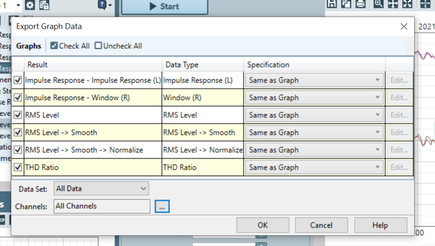
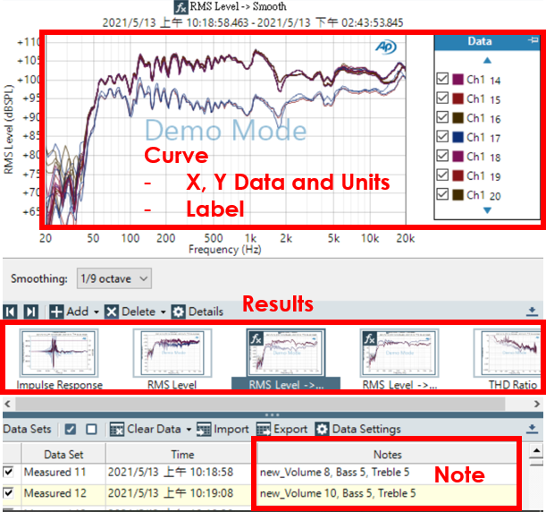
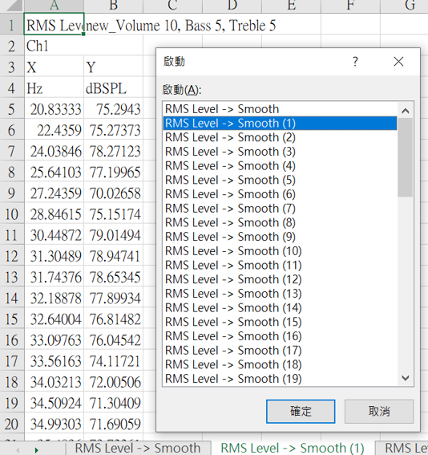

SAE聲學測試軟體¶
AP¶
AP以Sequence序列的模式進行測試，每次測試(measurement)會包含多個項目(result)。
以最常用的Acoustic Response測試序列為例，其包含Impulse Response、RMS Level、Delay、Phase、THD Ratio、THD Level、Rub and Buzz、Acquired Waveform等測試項目。
可一次輸出多個測試數據(measurement)。 而目前有多個測試項目的資料型態尚未支援，故在輸出時請僅輸出RMS Level、THD、Impedence、THD Ratio等測試項目。 AP測項支援列表

輸出格式: .xlsx。
輸出資料
包含: 測試項目名稱、測試的註解、曲線的XY資料、單位、名稱(預設為測試訊號的頻道名稱Ch1或Ch2)。
不包含: 畫布個人化設定(包含曲線的顏色、粗細等)、測試的時間。


Klippel¶
Klippel可進行NFS與Excursion等測試，測試結果由Klippel軟體內的多個視窗呈現。
以視窗為單位輸出視窗內的資料。

輸出格式: .txt。
書出資料
包含: 測試項目名稱、曲線的XY資料、單位、名稱。
不包含: 畫布個人化設定(包含曲線的顏色、粗細等)、測試的時間。


LEAP¶
LEAP可進行喇叭特性的模擬。
一次僅能輸出一條曲線與其相位曲線。

輸出格式: .txt。
書出資料
包含: 曲線的XY資料、單位、名稱、註解、資料數目、時間、檔案路徑。
不包含: 畫布個人化設定(包含曲線的顏色、粗細等)。